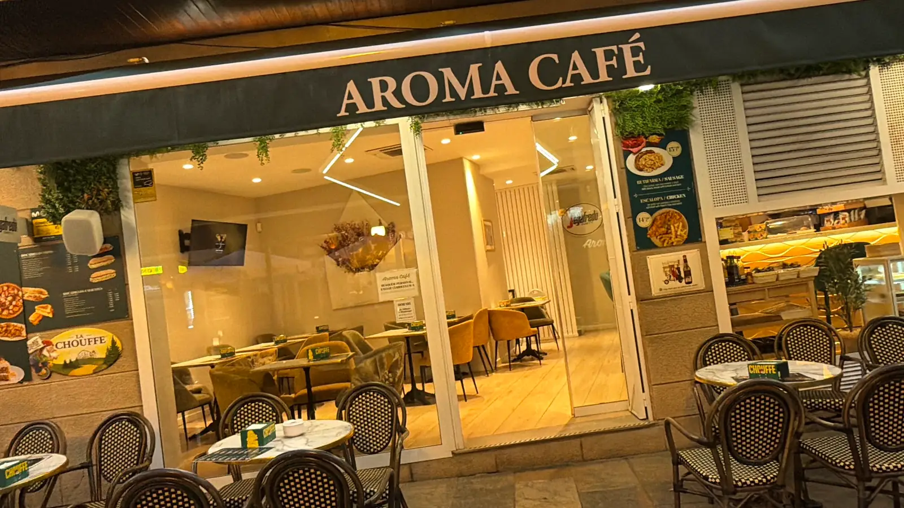
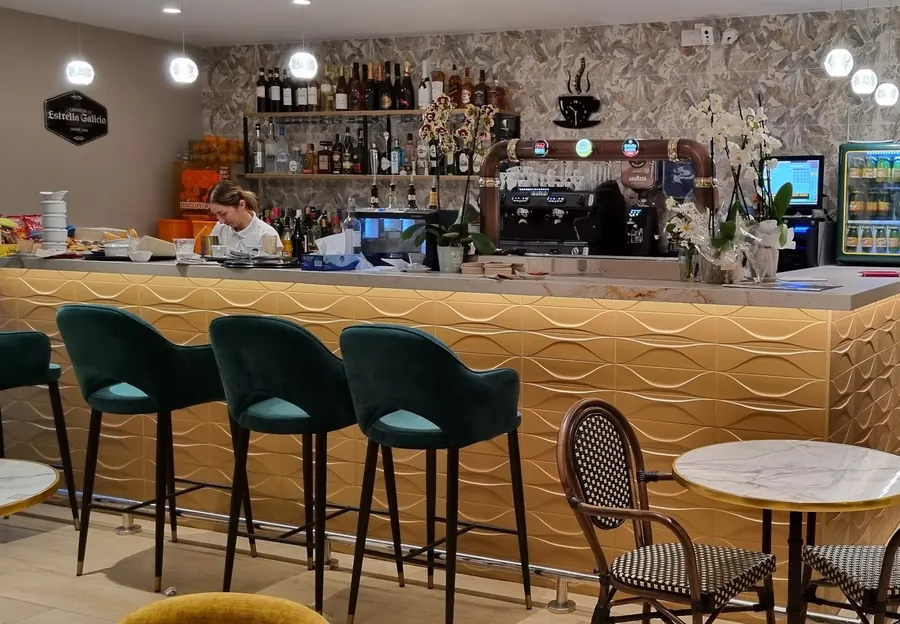
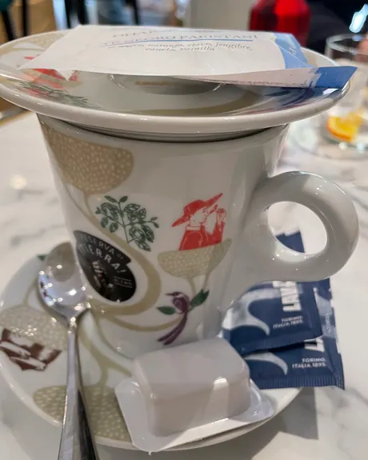
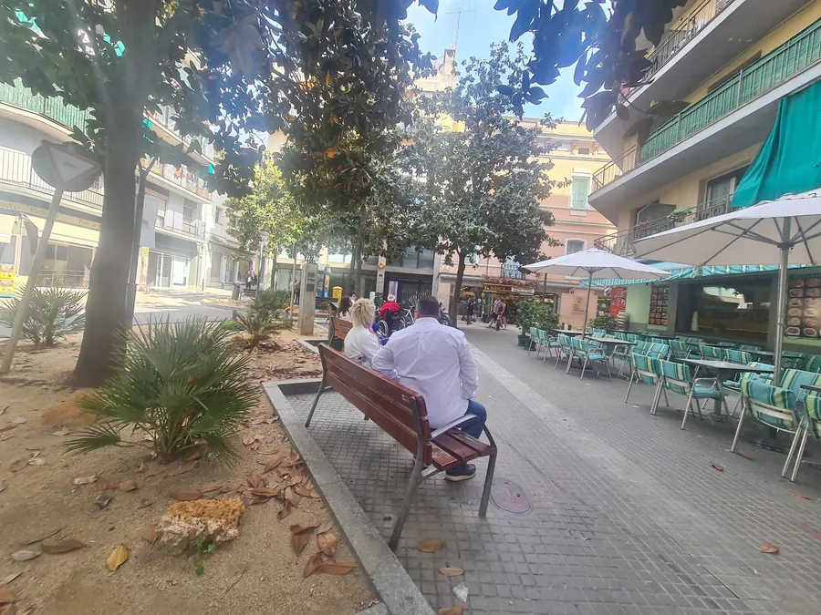

Café, cocina y terraza en el centro de Blanes
Desayunos, bocadillos, tapas y cócteles todos los días, a una calle de la playa.
Un café de siempre, a un paso del mar
Aroma Café abre cada mañana en pleno Passeig de Dintre, en el centro de Blanes. Café bien hecho y desayunos a primera hora, bocadillos y platos sencillos al mediodía, y tapas, cervezas y cócteles en la terraza hasta la noche.
Mesas de mármol, sillas de bistró, una barra dorada y un trato atento que los clientes destacan en sus reseñas.
- Todos los díasDe 8:30 a 23:00
- TerrazaEn el Passeig de Dintre
- MascotasSon bienvenidas
- AccesibleAcceso y aseo adaptados


Del primer café a la última copa
De 8:30 a 23:00, la cocina y la barra acompañan todo el día.
-
Por la mañana
Desde las 8:30, café con leche, cortado o capuchino, tostadas y bollería para empezar el día sin prisa.
- Tostada con tomate y jamón
- Tostada de salmón
- Croissant y bollería
- Café, té y zumos
-
Al mediodía
Bocadillos fríos y calientes, hamburguesas, platos combinados y ensaladas para comer bien sin complicaciones.
- Bocadillos en pan grande o pequeño
- Hamburguesas con patatas
- Escalopa de pollo
- Ensalada griega
-
Tarde y noche
Tapas para compartir, cerveza fría, sangría y cócteles en la terraza, hasta las 23:00.
- Patatas bravas de la casa
- Pulpo a la gallega
- Calamares a la romana
- Sangría y mojitos
La carta
Una selección de lo que se sirve cada día. La carta completa y los precios, en el local.
Café
Expreso, cortado, café con leche o capuchino.
Té
Tostada con tomate y jamón
Tostada de salmón
Tostada de queso curado
Tostada de butifarra con cebolla
Croissant y bollería
Y pastelería, como el pastel de zanahoria.
Zumos
Jamón serrano o ibérico
Fríos, en pan grande o pequeño.
Butifarra blanca, fuet o queso curado
Vegetal
Con atún, con jamón o con queso.
Salmón
Con lechuga y huevo duro.
Bikini
Jamón y queso.
Tortilla francesa o rellena
Caliente, en pan grande o pequeño.
Lomo o bacon con queso
Serranito
Lomo, jamón y pimiento verde.
Calamares
Vegetal con pollo
Hamburguesa clásica
Ternera, ensalada, tomate y queso cheddar, con patatas fritas.
Hamburguesa mexicana
Ternera, guacamole, cebolla caramelizada y cheddar.
Hamburguesa de pollo
Pollo, ensalada, tomate y queso cheddar.
Huevos fritos con jamón ibérico
Con virutas de jamón.
Escalopa de pollo
Con patatas y ensalada.
Butifarra con judías
Con pan con tomate y alioli.
Lomo con patatas y huevo
Ensalada griega
Tomate, pepino, cebolla, aceitunas y queso feta.
Patatas bravas
Al estilo de la casa.
Calamares a la romana
Rebozados, con limón.
Pulpo a la gallega
Con aceite de oliva y pimentón.
Chipirones
Boquerones
Entre los platos más pedidos.
Pan con tomate y jamón
Cervezas
Estrella Galicia, 1906 y La Chouffe, entre otras.
Sangría
Mojito y mojito de fresa
Y otros cócteles.
Vinos y licores
Copas y combinados.
Refrescos y zumos
Postres
Pastel de zanahoria y carta de postres.
Hay sugerencias fuera de carta en la pizarra de la entrada. Si tiene alguna alergia o intolerancia, consulte al personal.
El local y la terraza
Fotografías del propio café y de sus clientes.
Lo que dicen quienes nos visitan
«¡Excelente servicio! ¡Excelente café! La pastelería estaba muy buena […] Todo se veía fresco, el ambiente y el local estaban súper limpios y ordenados.»
«Qué lugar tan acogedor, la comida espectacular, deliciosa, riquísima. La atención de las chicas […] súper atentas y amables.»
«Muy lindo sitio con mesas al aire libre. Tiene excelentes opciones de comida y bebida y excelente calidad-precio.»
Passeig de Dintre, 4
En el centro de Blanes, a una calle de la playa y del Passeig de Mar.
- Dirección
- Passeig de Dintre, 4
17300 Blanes, Girona - Horario
- Todos los días
de 8:30 a 23:00 - Reservas
- 972 74 66 43
Por teléfono - Pago
- Tarjeta y móvil
Aparcamiento de pago cerca, en el Passeig de Mar. También se prepara para llevar.

El mapa se carga desde Google Maps.